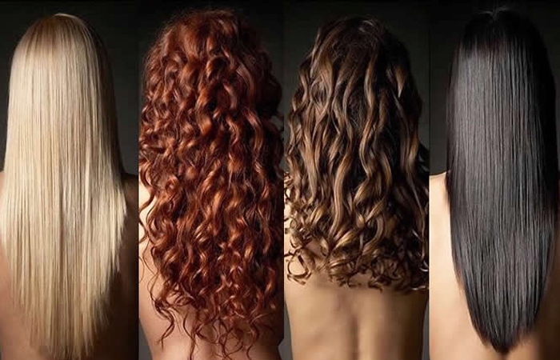
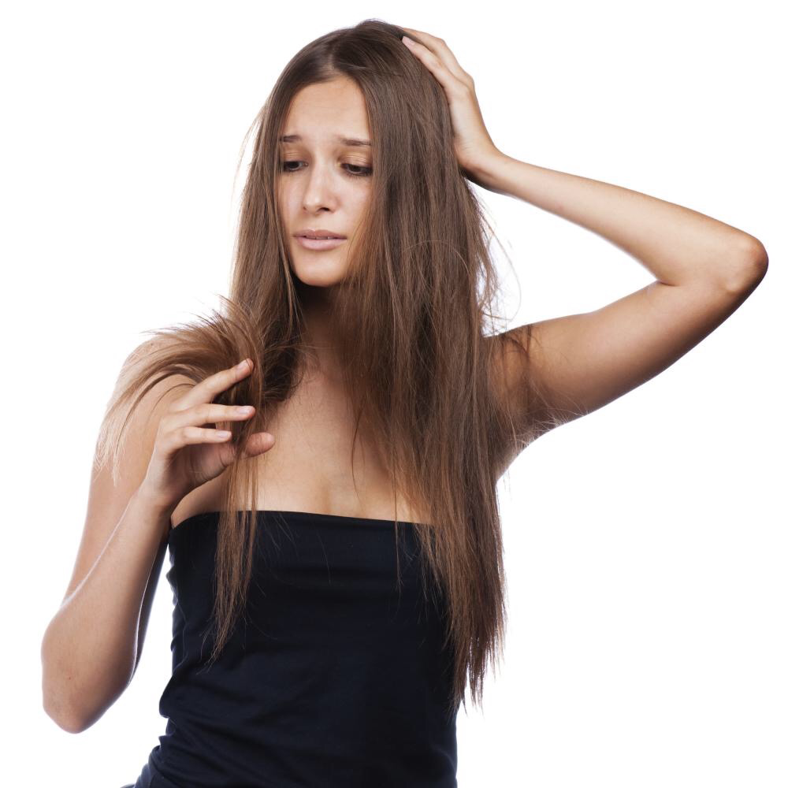
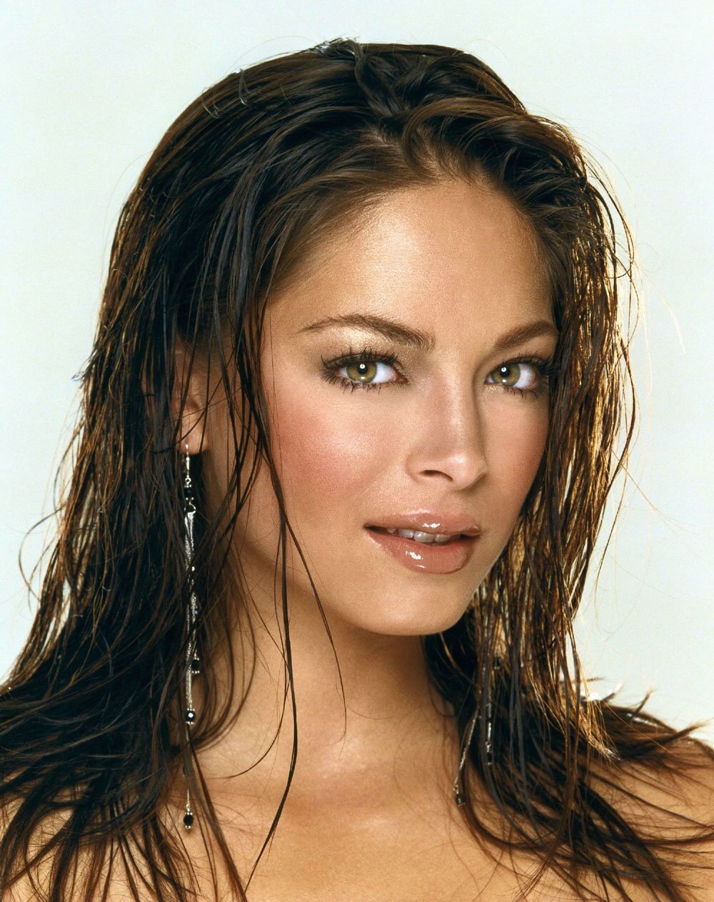
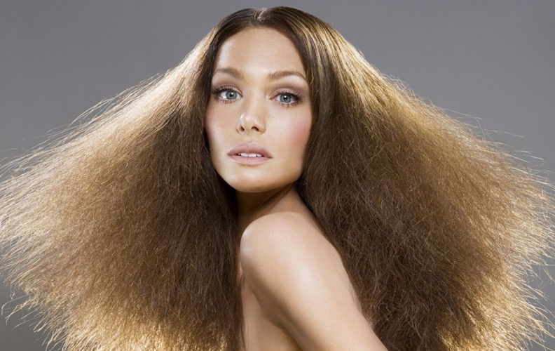

Типы волос. Как определить свой?
Для правильного и эффективного ухода за волосами важно грамотно определить свой тип волос (то есть характер салоотделения кожи головы). Различают нормальные (с умеренным салоотделением), жирные (с повышенным салоотделением), сухие (с пониженным салоотделением) и смешанные волосы. Для каждого из этих типов требуется особый уход. Неправильное определение своего типа волос может ухудшить их состояние. Если вы не знаете как определить свой тип волос, то эта статья для Вас.
Нормальные волосы.
У обладательниц нормального типа волос жирность кожи умеренная, так что такая проблема, как шелушение встречается крайне редко. Если волосы здоровы, то они отличаются эластичностью, чаще всего достаточно густые, имеют здоровый блеск и переливаются на солнце. Поскольку секреция сальных желез не очень активна, то прядки выглядят частыми в течение нескольких дней после мытья головы. Такой тип волос не требует особенного ухода. Что касается характерных проблем, то такие неприятности, как сечение кончиков почти не встречаются, локоны без труда расчесываются, не ломаются при скручивании, без труда укладываются в прическу и хорошо держат форму при накручивании. Что касается перхоти, то она также встречается нечасто, как правило, кожа головы чистая .
Сухие волосы.
Сухая кожа очень чувствительна к внешним раздражителям, а потому нередко начинает шелушиться из-за некачественной воды, ветра, солнечных лучей, бытовой химии для укладки и прочих факторов. Такие прядки в целом существенно тоньше, чем волосы нормального типа. Небольшая секреция сальных желез обуславливает плохую защиту волоков — кожное сало просто не доходит до кончиков, так что они часто пересушенные, секутся, не эластичные, тусклые и ломкие, не имеют блеска (поскольку именно сальная пленка отражает солнечный свет). При использовании химических красителей такая шевелюра сильно пересушивается и напоминает солому. Часто обладательницы таких волос страдают от сухой перхоти – при расчесывании отслоившиеся чешуйки кожи высыпаются из прядей и оседают на плечах тонкой белесой пылью. Поскольку кожного сала выделяется мало, то прядки долгое время не жирнятся. Отсутствие упругости прядей делает укладку сложным делом, но если использовать щадящие методы стайлинга, к примеру, бигуди, то прическа держится хорошо — такие волосы чаще всего легкие. Для приобретения эластичности и блеска сухие волосы нуждаются в дополнительном питании, которое активизирует кровообращение, нормализует жировой обмен и возвращает волосам эластичность. Полезно делать компрессы и маски из различных растительных масел (оливкового, соевого, касторового, репейного, мятного, жасминового и т.д.).
Жирные волосы.
Кожа имеет специфический жирный блеск, для нее характерны расширенные поры. Жирные волосы эластичны и меньше поглощают воду, чем нормальные, имеют характерный тусклый блеск, спустя небольшое время после мытья слипаются и начинают казаться грязными, неопрятными. Жирность волос - результат повышенной активности сальных желез кожи головы. В какой-то степени количество вырабатываемого кожного сала зависит от типа питания и количества потребляемых с пищей углеводов (в первую очередь) и жиров. При уходе за жирными волосами нужно соблюдать диету с пониженным содержанием жира - она помогает нормализовать работу эндокринной системы. Нарушения деятельности сальных желез могут быть связаны с заболеваниями нервной системы, гормональными расстройствами, приемом определенных лекарств, нерациональным питанием. Жирные волосы обычно встречаются у молодых людей, однако их могут иметь и люди более зрелого возраста . Без специального ухода они имеют характерный тусклый блеск, через короткое время после мытья (2-3 дня, даже несколько часов) утрачивают пушистость, слипаются и склеиваются в отдельные пряди, повисают сосульками и начинают выглядеть неопрятно. Избыток кожного сала откладывается на коже волосистой части головы в виде чешуек или желтоватых корок, вызывающих зуд.
Cмешанный тип волос (комбинированный).
Волосы смешанного типа, как правило, длинные, жирные у корней и сухие на концах. Это результат того, что они недостаточно смазываются жиром по всей длине. Концы смешанных волос, не получая необходимой смазки, часто секутся. Им нужен комбинированный уход с помощью различных специальных средств.
Простой тест: "Как определить свой тип волос?"
1) Периодичность мытья шевелюры: как часто ее приходится мыть?
- а) каждые 3-4 дня;
- б) раз в 5-7 дней;
- в) уже на следующий день пряди слипаются в сосульки;
- г) через 2-3 дня.
2) Каково состояние кончиков волос?
- а) практически нет посеченных кончиков;
- б) сплошная проблема — сухие, секутся и ломаются;
- в) вообще не секутся;
- г) секутся и ломаются.
3) Каково состояние корней волос?
- а) жирность умеренная — грязниться начинают уже на 2-3 день;
- б) сухие кончики, жирнятся только через неделю;
- в) нормальные, грязниться начинают уже через день;
- г) заметно жирнятся только через 3-4 дня после мытья но кончики все равно сухие.
4) Оцените блеcк волос (нужен источник света: солнце или лампочка):
- а) блестят и переливаются на солнце;
- б) в целом не очень блестят, тусклые;
- в) волосы блестят, но через день после мытья блеск становится неприятным — волосы жирные;
- г) блеск есть, но только у корней — кончики сухие и тусклые.
5) Как долго после мытья сохнут волосы?
- а) долго сохнут;
- б) сохнут быстро особенно кончики;
- в) сохнут умеренно;
- г) сначала высыхают кончики, а корни еще долго влажные.
6) Оцените наличие термического воздействия на волосы:
- а) да, пользуюсь феном, плойкой или утюжком, но волосы не страдают;
- б) пользуюсь феном, плойкой или утюжком, но редко, т.к. волосы сильно сушит;
- в) стараюсь сушить естественно, так как волосы еще быстрее становятся сальными;
- г) кончики и так сухие, а после сушки феном вообще отваливаются.
7) Электризуются ли локоны?
- а) почти не сталкиваюсь с такой проблемой;
- б) зимой особенно часто;
- в) только изредка;
- г) только кончики.
8) Оценить пышность волос:
- а) пышные, но умеренно;
- б) очень пышные;
- в) пышные только после мытья, уже на следующий день слипаются в сосульки;
- г) объем есть только у корней, а кончики безжизненные.
Большое количество ответов под буквой А свидетельствует о нормальном типе волос. В качестве ухода предлагается делать поддерживающие и витаминные маски 1-2 раза в неделю.
Если в ответах превалирует буква Б, то можно определить сухой тип. Такая шевелюра нуждается в увлажняющих и питательных масках и щадящем уходе.
Если большинство вариантов ответов – это буква В, то локоны относятся к жирному типу. Комплекс процедур с маслами для нормализации секреции сальных желез поможет привести вашу прическу в порядок.
Ответы под буквой Г говорят о смешанном типе волос. Стоит уделять внимание и сухим кончикам, и жирным корням — это позволяет обеспечить оптимальный уход и сделать шевелюру красивой.